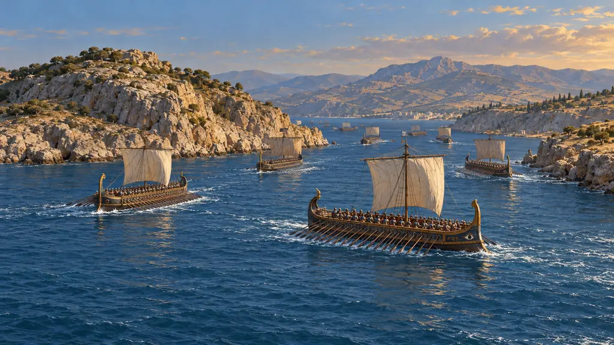
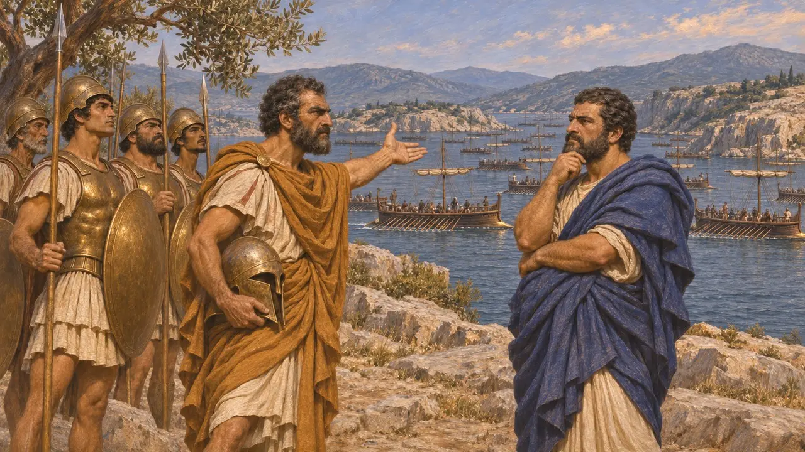
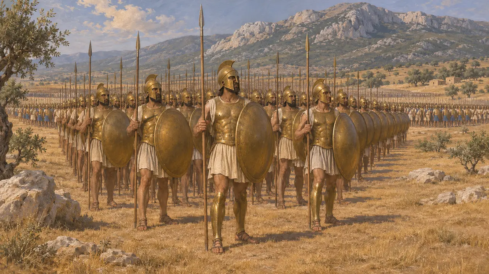
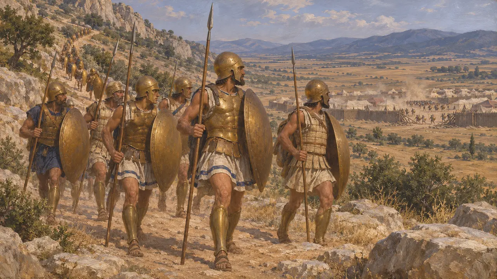
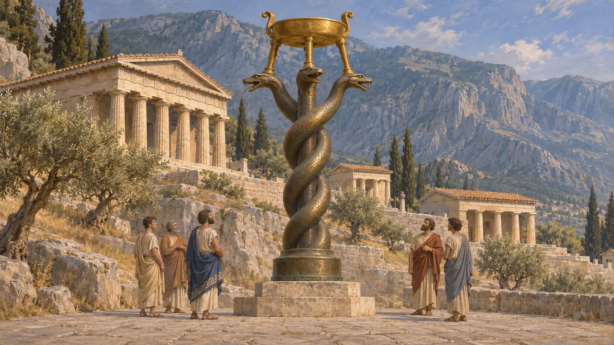
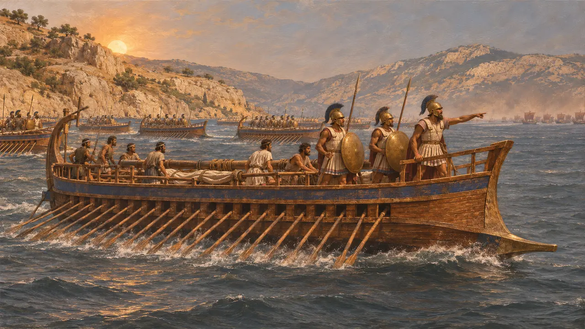

코린토스는 그리스 중부와 펠로폰네소스를 잇는 지협 위의 교역 도시로, 크세르크세스에 맞선 그리스 동맹에 병력과 배를 보냈다. 그 중장보병은 테르모필레와 플라타이아에서 싸웠다. 그 기록은 누가 제 몫을 했는지를 두고 그리스인끼리 의견이 갈린 사례이기도 하다.
게임에서: 게임은 연대기, 칙령, 원정 해설에서 주로 플라타이아의 파우사니아스 군대에 속한 도시 가운데 하나로 코린토스인을 언급한다. 이 글들이 보여 주는 것 외에 고유한 게임 메커니즘은 없다.

그리스 동맹 속의 코린토스
고대의 전승헤로도토스는 코린토스를 테르모필레 항전에 병력을 보낸 도시 가운데 하나로 꼽으며 코린토스 중장보병을 기원전 400년명으로 적는다. 또 코린토스가 아르테미시온에서, 그리고 다시 살라미스에서 배 40척을 냈다고 말한다. 그는 살라미스의 코린토스 지휘관으로 아데이만토스를 들고, 그가 어디서 싸울지를 두고 테미스토클레스와 다투는 모습을 그린다.
Herodotus 7.202, 8.1, 8.43, 8.59

플라타이아의 군대
분쟁 중헤로도토스는 기원전 479년 파우사니아스가 이끈 그리스군의 전투 서열을 전한다. 그의 셈으로 코린토스인은 중장보병 5,000명으로, 라케다이몬인 10,000명과 아테네인 8,000명 다음이다. 자세한 목록은 그의 것뿐이며, 현대 역사가들은 매우 큰 그리스군이라는 전체 그림은 받아들이지만 그의 합계가 정확한지는 의심한다.
Herodotus 9.28-30

전투에서의 몫
고대의 전승헤로도토스는 코린토스인이 플라타이아의 주 전투에 늦게 도착했다고 말한다. 그들은 키타이론 산기슭 길로 갔고, 스파르타인과 테게아인이 페르시아 진영에 쳐들어간 뒤에야 다다랐다. 이것은 헤로도토스의 서술이며, 그는 이를 부끄러운 불참이라고 부르지 않는다.
Herodotus 9.69

뱀 기둥에 새겨진 이름
당대 기록플라타이아 뒤 그리스인은 델포이에 세 마리 뱀이 얽힌 기둥 위에 청동 세발솥을 얹어 봉헌했다. 그 비문은 싸운 도시들을 열거하는데, 코린토스인도 그 가운데 있다. 청동 뱀 몸통은 오늘날 이스탄불에 남아 있으며 이름도 아직 읽을 수 있다. 헤로도토스도 이 봉헌을 언급한다.
Meiggs and Lewis, Greek Historical Inscriptions, no. 27; Herodotus 9.81

코린토스인은 살라미스에서 달아났나?
분쟁 중헤로도토스는 전투가 시작되자 아데이만토스와 코린토스인이 배를 몰고 떠났다는 아테네 쪽 이야기를 전한다. 그는 코린토스인이 이를 부인했고 나머지 그리스가 그들 편에서 증언했다고 덧붙인다. 플루타르코스는 뒤에 이 이야기를 악의적이라고 했다. 현대 역사가들은 대체로 이를 의심하며, 아테네와 코린토스의 경쟁이 빚어낸 이야기로 본다.
Herodotus 8.94; Plutarch, On the Malice of Herodotus
출처
- Herodotus 9.28-30
- Herodotus 7.202
- Herodotus 8.94
- Herodotus 9.69
- Meiggs and Lewis, Greek Historical Inscriptions, no. 27
- Plutarch, On the Malice of Herodotus